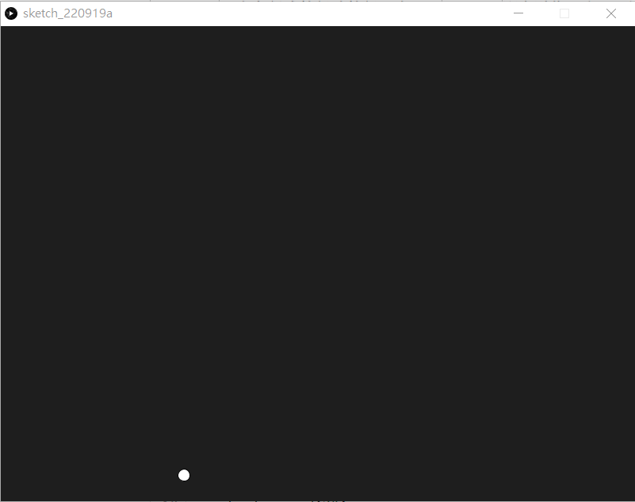

1. Pong Game
《乓》（英語：Pong）是雅達利在1972年11月29日推出的一款投幣式街機遊戲。《乓》是一款乒乓球遊戲，其英文名稱「Pong」來自乒乓球被擊打後所發出的聲音。《乓》很多時候也被認為是電子遊戲歷史上第一個街機電子遊戲。在此遊戲中，玩家的目的就是在模擬乒乓球比賽中奪取高分以擊敗電腦玩家。此遊戲的開發者為艾倫·奧爾康。

1. Pong Game1.1 開始遊戲1.2 令球移動創建一個會動的球令球懂得撞牆反彈1.3 製作player1球拍製作球拍令球拍懂得反彈球1.4 製作player2球拍1.5 計分1.6 Restart the game
1.1 開始遊戲
1def setup():2 size(800, 600)3def draw():4 ellipse(width/2, height/2, 15, 15)
Processing.py的程式碼，內置已經有兩個函數，分別為setup()和draw()，顧名思義，setup() 只會在程式執行時執行一次，而draw()則有點像arduino的loop()，會不斷重覆。而程式中width和height是關鍵字，對應就是size()中的長和寬。
下一步，就要令中間的球移動。
1.2 令球移動
創建一個會動的球
x1ballX=02ballY=03ballSpeedX=04ballSpeedY=05
6def setup():7 global ballX, ballY, ballSpeedX, ballSpeedY8 9 size(800, 600)10 ballX = width/211 ballY = height/212 ballSpeedX = -113 ballSpeedY = random(-2, 2)14 15def draw():16 global ballX, ballY, ballSpeedX, ballSpeedY17 18 background(30)19 ballX += ballSpeedX20 ballY += ballSpeedY21 ellipse(ballX, ballY, 15, 15)
xxxxxxxxxx41ballX=02ballY=03ballSpeedX=04ballSpeedY=01創建4個變數，分別為ballX, ballY, ballSpeedX和ballSpeedY。對應的是球的x和y座標，球的x和y的速度。之後在setup()中預設球的位置和初速。(之所以不在一開始宣告就設定它們的值，而是在setup()中，是因為之後restart game時會方便很多)
xxxxxxxxxx11global ballX, ballY, ballSpeedX, ballSpeedYPython語言跟其他語言比有點特別，所有的global變數，不需要特別宣告，就可以在所有函數中應用，但如果要在函數中要改變global變數的話，就需要在函數之內用keyword global將global變數宣告一次。
xxxxxxxxxx41ballX = width/22ballY = height/23ballSpeedX = -14ballSpeedY = random(-2, 2)一開始球在瑩幕正中，預設向player1(左邊)放向發去，所以ballSpeedX一開始是-1。
xxxxxxxxxx21ballX += ballSpeedX2ballY += ballSpeedY之後每次draw()不停重覆時，就更新球的x和y座標，將其加上球的速度，這樣球就會不停移動。
令球懂得撞牆反彈
xxxxxxxxxx251ballX=02ballY=03ballSpeedX=04ballSpeedY=05
6def setup():7 global ballX, ballY, ballSpeedX, ballSpeedY8 9 size(800, 600)10 ballX = width/211 ballY = height/212 ballSpeedX = -113 ballSpeedY = random(-2, 2)14 15def draw():16 global ballX, ballY, ballSpeedX, ballSpeedY17 18 background(30)19 ballX += ballSpeedX20 ballY += ballSpeedY21 22 if ballY <= 0 or ballY >= height:23 ballSpeedY *= -1;24 25 ellipse(ballX, ballY, 15, 15)
xxxxxxxxxx21if ballY <= 0 or ballY >= height:2 ballSpeedY *= -1;要令球懂得在上和上反彈，就要知道它的y座標，所以就用if去判斷它的y座標，如果是少於0或者大於height的話，則代表球已經出界，超出瑩幕範圍，這時就將球的y速度反轉，球就會反彈。(這也是為什麼需要特別去設定一個球的x和y速度的變數，而不直接用ballX+=1或ballY+=1)
1.3 製作player1球拍
製作球拍
xxxxxxxxxx401ballX=02ballY=03ballSpeedX=04ballSpeedY=05
6player1X = 07player1Y = 08
9def setup():10 global ballX, ballY, ballSpeedX, ballSpeedY, player1X, player1Y11 12 size(800, 600)13 ballX = width/214 ballY = height/215 ballSpeedX = -116 ballSpeedY = random(-2, 2)17 18 player1X = 1019 player1Y = height/220 21def draw():22 global ballX, ballY, ballSpeedX, ballSpeedY, player1X, player1Y23 24 background(30)25 ballX += ballSpeedX26 ballY += ballSpeedY27 28 if ballY <= 0 or ballY >= height:29 ballSpeedY *= -1;30 31 ellipse(ballX, ballY, 15, 15)32 33 if keyPressed:34 if key == 'W' or key == 'w':35 player1Y -= 336 if key == 'S' or key == 's':37 player1Y += 338 39 rectMode(CENTER)40 rect(player1X, player1Y, 10, 50)
下一部就是要製作player的球拍，球拍我們用一個長方形去表示。
xxxxxxxxxx21player1X = 02player1Y = 0宣告2個變數，是球拍中心的xy座標位置。
xxxxxxxxxx21player1X = 102player1Y = height/2在setup()處，設定球拍的初始位置。
xxxxxxxxxx81if keyPressed:2 if key == 'W' or key == 'w':3 player1Y -= 34 if key == 'S' or key == 's':5 player1Y += 36
7rectMode(CENTER)8rect(player1X, player1Y, 10, 50)在draw()的最下面，加入控制球拍的指令。keyPress為keyword，當你鍵盤任意按鍵初按下時就會是True，相反則為False。key也是keyword，用來回傳鍵盤按下的鍵相應的值，但值得注意的是，key並不會自動測空，舉例如果按了一下k，在按下一個按鍵之前，key會一直都是k
令球拍懂得反彈球
xxxxxxxxxx431ballX=02ballY=03ballSpeedX=04ballSpeedY=05
6player1X = 07player1Y = 08
9def setup():10 global ballX, ballY, ballSpeedX, ballSpeedY, player1X, player1Y11 12 size(800, 600)13 ballX = width/214 ballY = height/215 ballSpeedX = -116 ballSpeedY = random(-2, 2)17 18 player1X = 1019 player1Y = height/220 21def draw():22 global ballX, ballY, ballSpeedX, ballSpeedY, player1X, player1Y23 24 background(30)25 ballX += ballSpeedX26 ballY += ballSpeedY27 28 if ballY <= 0 or ballY >= height:29 ballSpeedY *= -130 31 if ballX <= 10 and ballY >= player1Y - 25 and ballY <= player1Y +25:32 ballSpeedX *= -133 34 ellipse(ballX, ballY, 15, 15)35 36 if keyPressed:37 if key == 'W' or key == 'w':38 player1Y -= 339 if key == 'S' or key == 's':40 player1Y += 341 42 rectMode(CENTER)43 rect(player1X, player1Y, 10, 50)
xxxxxxxxxx21if ballX <= 10 and ballY >= player1Y - 25 and ballY <= player1Y +25:2 ballSpeedX *= -1加入這一段程式，當球的中心座標符合三個範圍的話，球就會反彈(為簡化程式，沒有計算球的半徑，你可以自行考慮加入)

1.4 製作player2球拍
xxxxxxxxxx561ballX=02ballY=03ballSpeedX=04ballSpeedY=05
6player1X = 07player1Y = 08
9player2X = 010player2Y = 011
12def setup():13 global ballX, ballY, ballSpeedX, ballSpeedY, player1X, player1Y, player2X, player2Y14 15 size(800, 600)16 ballX = width/217 ballY = height/218 ballSpeedX = -119 ballSpeedY = random(-2, 2)20 21 player1X = 1022 player1Y = height/223 24 player2X = width - 1025 player2Y = height/226 27def draw():28 global ballX, ballY, ballSpeedX, ballSpeedY, player1X, player1Y, player2X, player2Y29 30 background(30)31 ballX += ballSpeedX32 ballY += ballSpeedY33 34 if ballY <= 0 or ballY >= height:35 ballSpeedY *= -136 37 if ballX <= 10 and ballY >= player1Y - 25 and ballY <= player1Y +25:38 ballSpeedX *= -139 40 if ballX >= width - 10 and ballY >= player2Y - 25 and ballY <= player2Y +25:41 ballSpeedX *= -142 43 ellipse(ballX, ballY, 15, 15)44 45 if keyPressed:46 if key == 'W' or key == 'w':47 player1Y -= 348 if key == 'S' or key == 's':49 player1Y += 350 if key == 'O' or key == 'o':51 player2Y -= 352 if key == 'L' or key == 'l':53 player2Y += 354 rectMode(CENTER)55 rect(player1X, player1Y, 10, 50)56 rect(player2X, player2Y, 10, 50)
xxxxxxxxxx21player2X = 02player2Y = 0同樣地，加入變數去記錄球拍2的座標。
xxxxxxxxxx21player2X = width - 102player2Y = height/2在setup()中設定初始值。
xxxxxxxxxx21if ballX >= width - 10 and ballY >= player2Y - 25 and ballY <= player2Y +25:2 ballSpeedX *= -1跟player1的球拍一樣，player2的球拍，要加入判斷式，如果球的x座標大於width-10，即player2球拍的右邊，同一時間又介乎於球拍的y輻範圍當中，就會反彈。
xxxxxxxxxx11rect(player2X, player2Y, 10, 50)最後將player2的球拍畫出來。
1.5 計分
xxxxxxxxxx831ballX=02ballY=03ballSpeedX=04ballSpeedY=05
6player1X = 07player1Y = 08
9player2X = 010player2Y = 011
12score1 = 013score2 = 014
15def setup():16 global ballX, ballY, ballSpeedX, ballSpeedY, player1X, player1Y, player2X, player2Y, score1, score217 18 size(800, 600)19 ballX = width/220 ballY = height/221 ballSpeedX = -122 ballSpeedY = random(-2, 2)23 24 player1X = 1025 player1Y = height/226 27 player2X = width - 1028 player2Y = height/229 30 score1 = 031 score2 = 032 33def draw():34 global ballX, ballY, ballSpeedX, ballSpeedY, player1X, player1Y, player2X, player2Y, score1, score235 36 background(30)37 ballX += ballSpeedX38 ballY += ballSpeedY39 40 if ballY <= 0 or ballY >= height:41 ballSpeedY *= -142 43 if ballX <= 10 and ballY >= player1Y - 25 and ballY <= player1Y +25:44 ballSpeedX *= -145 46 if ballX >= width - 10 and ballY >= player2Y - 25 and ballY <= player2Y +25:47 ballSpeedX *= -148
49 if ballX <= 0:50 score2+=151 ballX = width/252 ballY = height/253 ballSpeedX = 154 ballSpeedY = random(-2, 2)55 56 if ballX >= width:57 score1+=158 ballX = width/259 ballY = height/260 ballSpeedX = -161 ballSpeedY = random(-2, 2)62 63 ellipse(ballX, ballY, 15, 15)64 65 if keyPressed:66 if key == 'W' or key == 'w':67 player1Y -= 368 if key == 'S' or key == 's':69 player1Y += 370 if key == 'O' or key == 'o':71 player2Y -= 372 if key == 'L' or key == 'l':73 player2Y += 374 rectMode(CENTER)75 rect(player1X, player1Y, 10, 50)76 rect(player2X, player2Y, 10, 50)77 78 textSize(60)79 textAlign(CENTER, CENTER)80 text(score1, width/4, 50)81 text(score2, width*3/4, 50)82 stroke(255)83 line(width/2, 10, width/2, height - 10)
xxxxxxxxxx21score1 = 02score2 = 0先宣告兩個變數去儲存兩個玩家的分數。再在setup()時設定為0
xxxxxxxxxx131if ballX <= 0:2 score2+=13 ballX = width/24 ballY = height/25 ballSpeedX = 16 ballSpeedY = random(-2, 2)7
8if ballX >= width:9 score1+=110 ballX = width/211 ballY = height/212 ballSpeedX = -113 ballSpeedY = random(-2, 2)如果球的x座標少於0或者大於width，則代表球已經出了界，這時就要為相對應的玩家加上一分，而球的球速也要重新放到起始點再來一局。
xxxxxxxxxx61textSize(60)2textAlign(CENTER, CENTER)3text(score1, width/4, 50)4text(score2, width*3/4, 50)5stroke(255)6line(width/2, 10, width/2, height - 10)最後，在draw()的最底下，加上文字，用來顯示兩個分數。
1.6 Restart the game
x
1ballX = 02ballY = 03ballSpeedX = 04ballSpeedY = 05
6player1X = 07player1Y = 08
9player2X = 010player2Y = 011
12score1 = 013score2 = 014
15def setup():16 global ballX, ballY, ballSpeedX, ballSpeedY, player1X, player1Y, player2X, player2Y, score1, score217 18 size(800, 600)19 ballX = width/220 ballY = height/221 ballSpeedX = -122 ballSpeedY = random(-2, 2)23 24 player1X = 1025 player1Y = height/226 27 player2X = width - 1028 player2Y = height/229 30 score1 = 031 score2 = 032 33 34def draw():35 global ballX, ballY, ballSpeedX, ballSpeedY, player1X, player1Y, player2X, player2Y, score1, score236 37 background(30)38 ballX += ballSpeedX39 ballY += ballSpeedY40 41 if ballY <= 0 or ballY >= height:42 ballSpeedY *= -143 44 if ballX <= 10 and ballY >= player1Y - 25 and ballY <= player1Y +25:45 ballSpeedX *= -146 47 if ballX >= width - 10 and ballY >= player2Y - 25 and ballY <= player2Y +25:48 ballSpeedX *= -149 50 if ballX <=0:51 score2 += 152 ballX = width/253 ballY = height/254 ballSpeedX = 155 ballSpeedY = random(2, -2)56
57 if ballX >= width:58 score1 += 159 ballX = width/260 ballY = height/261 ballSpeedX = 162 ballSpeedY = random(2, -2) 63 64 ellipse(ballX, ballY, 15,15)65 66 if keyPressed:67 if key == 'W' or key == 'w':68 player1Y -=369 if key == 'S' or key == 's':70 player1Y +=371 if key == 'O' or key == 'o':72 player2Y -=373 if key == 'L' or key == 'l':74 player2Y +=375 if key == 'R' or key == 'r':76 setup() 77 rectMode(CENTER)78 rect(player1X, player1Y, 10, 50)79 rect(player2X, player2Y, 10, 50)80 81 textSize(60)82 textAlign(CENTER, CENTER)83 text(score1, width/4, 50)84 text(score2, width*3/4, 50)85 stroke(255)86 line(width/2, 10, width/2, height - 10)
21if key == 'R' or key == 'r':2 setup() 在按鍵當中，加入指令，如果按下r鍵的話，就重新執行一次setup()，將所有變數都變回預設值，這也是為甚麼我們經常多此一舉，明明一開始已宣告了一個變數，但又要在setup()中設定它的值多一次。